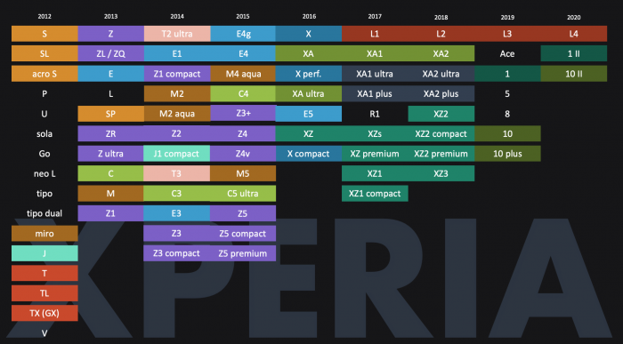

Sonys Xperia Modellchaos
Ich mag meine Differenzen mit Sony haben, aber trotzdem bin ich nach wie vor großer Fan der Smartphone-Serie von Sony: Xperia. Sony hat sich bisher immer ein wenig von der Masse abgehoben und mir war bisher nicht ganz klar, warum Sony mit seinen Smartphones so schlechte Verkaufszahlen einfährt. Die compact-Serie z.B. ist eines der selten gewordenen kleinen Smartphones, das auch in meine winzigen spillerigen Kinderfinger passt. Es bringt außerde eine recht passable Noise-Reduction mit und ist wie ganz selbstverständlich wasserdicht. Und das zu einem bisher immer sehr gutem Preis. Trotzdem ist der Absatz nach wie vor miserabel. Woran liegt das? Vermutlich an dem Dschungel aus Modellbezeichnungen der jeden ambitionierten Käufer verschreckt.

Sony Xperia Modellübersicht von 2012 bis 2020
Sony stellt seit 2012, nach der Trennung von Ericsson, seine Geräte wieder unter eigenem Namen her. In den letzten 8 Jahren hat Sony weit über 80 Modelle vorgestellt. Allein in 2012, dem ersten Jahr der Unabhängigkeit, hat Sony seine Käufer mit 16 Typenbezeichnungen überrascht. Im Laufe der Jahre kam noch einige dazu, allerdings ohne erkennbares System.
Wie z.B. die Geräte der Mittelklasseserie “M”: Das M3 wurde ausgelassen, das M4 gabe s nur als “aqua”-Modell (also wasserdicht). Bei einer anderen (!) Mittelklasseserie namens “C” gibt es auch eine Lücke: C - C3 - C4 - C5 ultra. Naja… und so weiter, und so fort. Es gibt keine Modellreihe, bis auf die Low-End-Serie L, in der Sony eine Benamung konsequent durchzieht. Es scheint fast so, als gäbe es einen Jour Fixe, bei dem die Produktmanager die Typenbezeichnung würfeln.
Sony hat das offenbar erkannt und in 2019 angekündigt, die Bennunung zu vereinfachen:
[…] we simplified our naming by using numbers for easier positioning of our product line up […]
Und wie sieht das in der Praxis aus? Das Xperia 1 ist nun das neue High-End-Modell. Das Xperia 10 gehört zur Mittelklasse, mitsamt dem 10 Plus - die gehobene Mittelklasse. Daneben gibt es ein Xperia 5 - ebenfalls High-End und das Xperia 8, wiederum Mittelklasse. 1, 5, 8 und 10. Noch Fragen? Die Nachfolger für 2020 wurden übrigens auch schon angekündigt: 1 Mark II und 10 Mark II. Und damit Sony seiner wirren Markenstragie treu bleibt wurde Ende Februar auch ein Xperia Pro angekündigt.